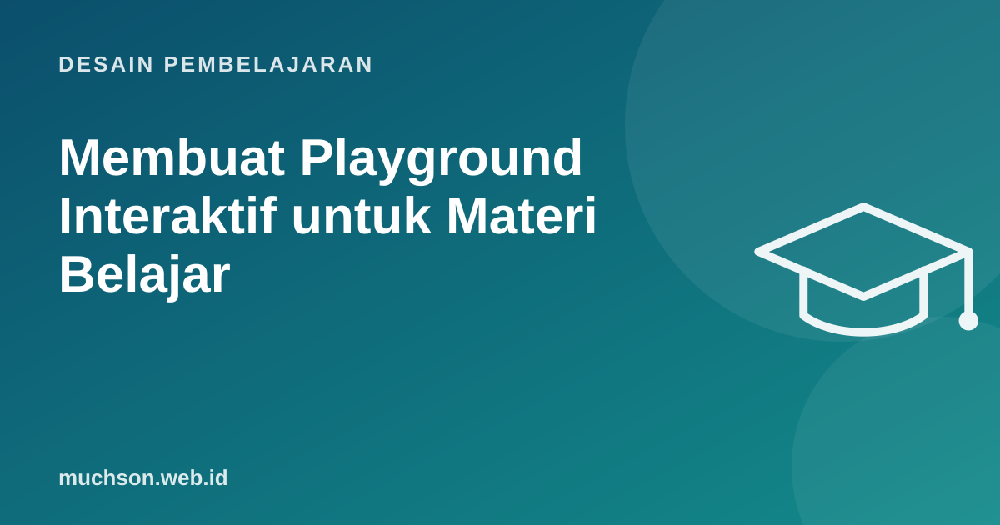

Beranda › Artikel › Desain Pembelajaran
Desain PembelajaranMembuat Playground Interaktif untuk Materi Belajar
Untuk program pelatihan yang saya bantu kembangkan, setiap hari kursus memiliki satu playground: halaman web interaktif tempat peserta mencoba konsep hari itu, mengambil keputusan, melihat akibatnya, lalu mengekspor hasil kerjanya. Playground tidak harus rumit. Yang penting ia melatih keputusan yang tepat.

Apa itu playground belajar?
Playground adalah lingkungan aman untuk mencoba. Berbeda dengan slide yang dibaca atau video yang ditonton, playground meminta peserta melakukan sesuatu dan memberi umpan balik dari tindakan itu. Contohnya: kalkulator kasus bisnis, simulasi percakapan, editor kode, peta keputusan, atau kanvas yang bisa diisi.
Langkah 1: tentukan keputusan yang dilatih
Jangan mulai dari teknologi. Mulai dari pertanyaan: keputusan apa yang harus bisa diambil peserta setelah hari ini?
| Topik | Keputusan yang dilatih | Bentuk playground |
|---|---|---|
| Retensi pelanggan | Akun mana yang dihubungi lebih dulu | Dashboard 20 akun simulasi dengan skor kesehatan |
| Green IT | Kapan mengganti perangkat | Kalkulator emisi umur pakai |
| UX gamification | Mekanik mana yang mendorong perilaku yang diinginkan | Pembangun loop gamifikasi dengan umpan balik |
| Pemrograman | Bagaimana memperbaiki kode yang salah | Editor dengan tes otomatis |
Langkah 2: prototipe cepat
Satu file HTML dengan sedikit JavaScript sering sudah cukup. Asisten AI sangat membantu membuat versi pertama dalam hitungan menit; tugas Anda adalah memastikan logika dan isi kasusnya benar.
<!-- kerangka playground kalkulator sederhana -->
<label>Pelanggan awal bulan <input id="awal" type="number" value="200"></label>
<label>Pelanggan berhenti <input id="henti" type="number" value="10"></label>
<p>Churn: <b id="hasil"></b></p>
<p id="saran"></p>
<script>
const hitung = () => {
const churn = henti.valueAsNumber / awal.valueAsNumber * 100;
hasil.textContent = churn.toFixed(1) + "%";
saran.textContent = churn > 5
? "Di atas target tim. Akun mana yang perlu dihubungi minggu ini?"
: "Dalam target. Apa yang membuat bulan ini berhasil?";
};
document.querySelectorAll("input").forEach(i => i.oninput = hitung);
hitung();
</script>Perhatikan bahwa umpan balik di contoh ini berupa pertanyaan yang mendorong refleksi, bukan hanya angka. Ini yang membedakan playground dari kalkulator biasa.
Langkah 3: hasil kerja yang bisa dibawa pulang
Peserta lebih menghargai latihan bila hasilnya berguna setelah kelas. Tambahkan tombol untuk mengekspor ringkasan keputusan menjadi teks, PDF, atau dokumen, yang bisa dikumpulkan sebagai tugas atau dipakai di pekerjaan.
// ekspor ringkasan sebagai file teks
function unduh() {
const isi = `Rencana tindakan\nChurn: ${hasil.textContent}\nAkun prioritas: ${pilihan.join(', ')}`;
const a = document.createElement('a');
a.href = URL.createObjectURL(new Blob([isi], { type: 'text/plain' }));
a.download = 'rencana-tindakan.txt';
a.click();
}Langkah 4: uji dengan peserta sungguhan
- Minta 2-3 orang mencoba tanpa penjelasan. Di mana mereka bingung?
- Apakah mereka benar-benar mengambil keputusan, atau hanya mengklik?
- Apakah berjalan baik di ponsel dan di laptop kantor dengan browser lama?
- Periksa aksesibilitas: label input, kontras, navigasi keyboard.
Hosting dan perawatan
Tanya jawab
Apakah harus bisa coding untuk membuat playground?
Berapa lama membuat satu playground?
Bagaimana memastikan playground tetap berfungsi bertahun-tahun?
Sumber dan bacaan lanjut
- MDN Web Docs: Getting started with the web
- H5P: interactive content
- Merancang e-learning yang tidak membosankan (artikel terkait)